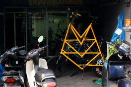

© PT PENA AKTUAL NETWORK - PenaAktual
Home
About Us
News
Features
Articles
Channel
COMPANY PROFILE
Dari Iseng Bikin Konten Nabila Rhohimah Kini Jadi Inspirasi Banyak Orang
Dipergoki Warga Saat Mapping Subuh, Dua Orang Tak Dikenal Diamankan di
Rawakalong
#1
#2
#3
#2
#3
Komunitas Sepeda yang Mengayuh Silaturahmi dan Kesehatan di Depok
TRENDING

Pengendara Lebih Tenang, Jalan Ambles Di Cisalak Akhirnya Diperbaiki
Depok
Dipergoki Warga Saat Mapping Subuh, Dua Orang Tak Dikenal Diamankan di Rawakalong
Selengkapnya
Dipergoki Warga Saat Mapping Subuh, Dua Orang Tak Dikenal Diamankan di Rawakalong
Selengkapnya
Depok
Dari Iseng Bikin Konten Nabila Rhohimah Kini Jadi Inspirasi Banyak Orang
Selengkapnya
Dari Iseng Bikin Konten Nabila Rhohimah Kini Jadi Inspirasi Banyak Orang
Selengkapnya
Depok
Komunitas Sepeda yang Mengayuh Silaturahmi dan Kesehatan di Depok
Selengkapnya

Komunitas Sepeda yang Mengayuh Silaturahmi dan Kesehatan di Depok
Selengkapnya
BERITA TERKINI